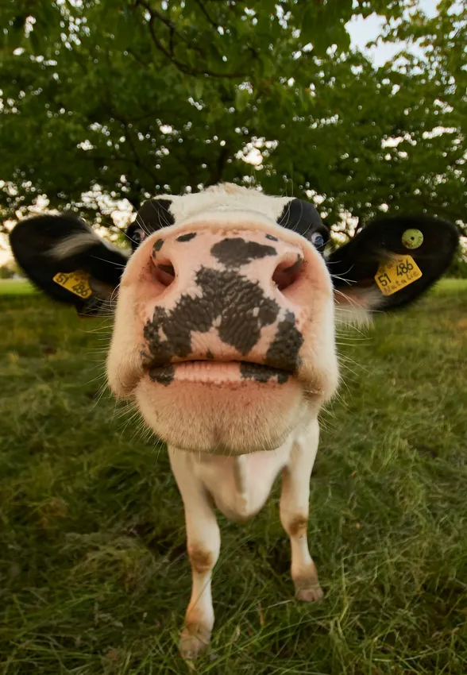
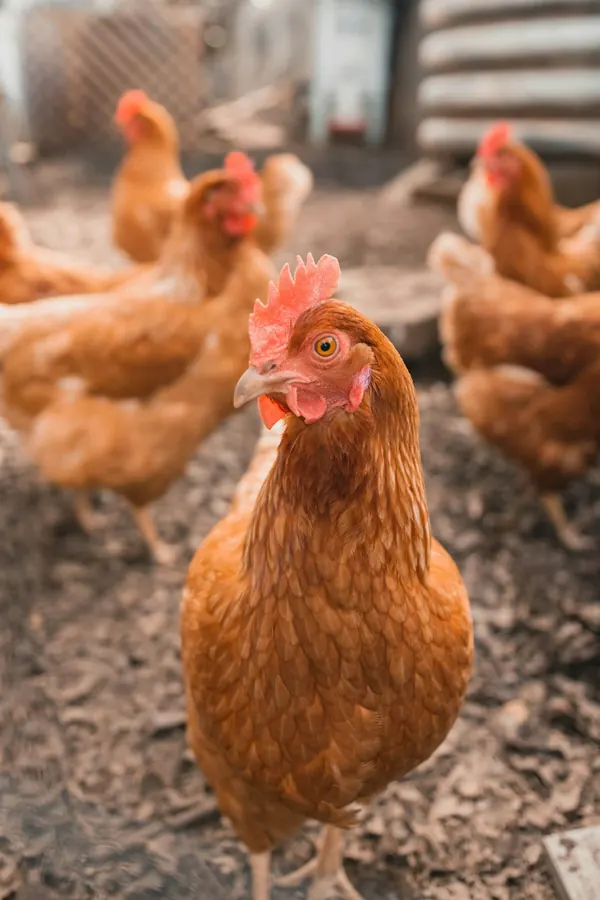
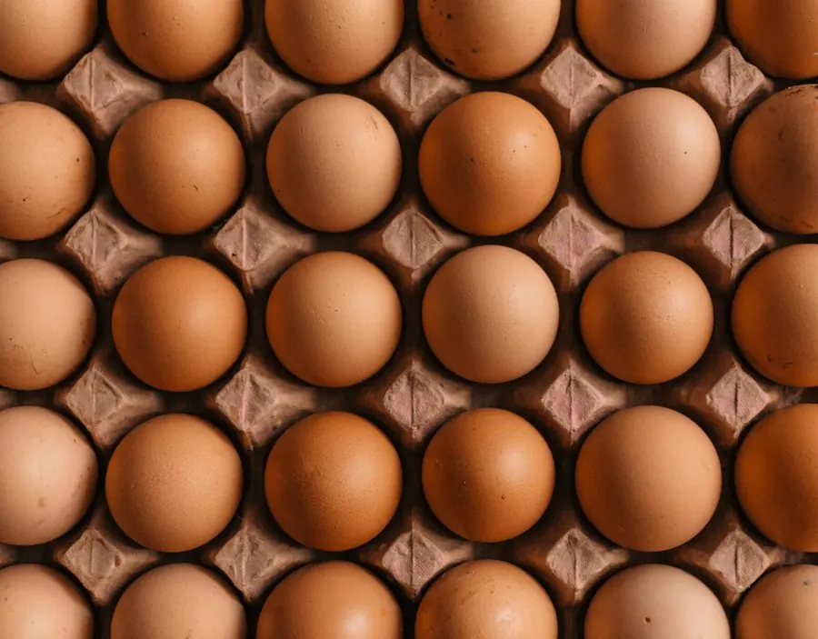

Ethical Livestock & Regenerative Pastures
Open-pasture rotational grazing, cruelty-free native cattle conservation, pastured poultry, and zero routine antibiotics producing pristine certified A2 whole milk and farm fresh eggs.
Mimicking Natural Herd Movements On Living Pastures
Animals are fundamental to a healthy farm ecosystem. Instead of confined factory sheds, our indigenous Indian cattle (Gir, Kangayam, and Sahiwal breeds) roam open rolling paddocks sown with clover, alfalfa, and native herbal grasses.
By shifting the herd to fresh paddocks every 48 hours, cattle naturally aerate and fertilize the ground with microbial-rich manure, allowing previous plots 28 days of rapid photosynthetic recovery.
🌿 100% Grass-Fed
Zero corn, GMO soy, or synthetic growth hormones.
🐄 Indigenous Breeds
Naturally climate-resilient with pure A2 beta-casein genetics.


Mobile Coops & Sunshine Foraging Flocks
Our heritage laying hens follow cattle across pasture paddocks in custom solar-powered mobile coops. By foraging on pasture grubs, grass seeds, and wild herbs, they clean parasite cycles from the sod.
The result is dense, deep-orange yolks high in Omega-3 fatty acids, vitamin D3, and lutein, produced without cage confinement or prophylactic antibiotics.
- ✓ 54 Sq Ft Living Space Per Bird: Exceeding European organic free-range welfare minimums.
- ✓ Natural Diurnal Light Cycles: Zero artificial midnight lighting stimulation or forced molting.
Organic Certified Forage Hay & Winter Silage
During dry seasonal interludes, our livestock feed exclusively on certified organic hay bales harvested directly from our own alfalfa, sainfoin, and orchard grass plots.
Baled at peak protein before seeding and sun-cured naturally, our winter forage maintains optimal rumen digestion, ensuring stable milk butterfat and immunity without grain supplements.
Laboratory verified nutrient density ensuring superior bovine health and natural resistance against mastitis.

The Four Pillars of Stackly Livestock Stewardship
Scientific benchmarks ensuring animal happiness, longevity, and purity of dairy derivatives.
Open Grazing Freedom
Unrestricted pasture roaming with shade groves, freshwater streams, and solar misting stations.
Mother-Calf Bonding
Calves remain with mothers in nursery paddocks, nursing naturally for the first 90 days before weaning.
Ayurvedic Wellness
Ashwagandha, turmeric, and herbal anthelmintics prevent parasite loads without synthetic pharmaceuticals.
Gentle Solar Milking
Low-vacuum pulsation liners mimic suckling rhythm. Raw milk piped immediately to 3°C bulk chillers.
The Pure A2 Beta-Casein Advantage
Easier to digest, anti-inflammatory, and naturally nutrient-dense.
Beta-Casein Purity
DNA-tested herds producing milk that yields no inflammatory BCM-7 opioid peptide during human digestion.
Natural Butterfat
Rich in fat-soluble vitamins A, D, E, and bioactive conjugated linoleic acid (CLA) from diverse clover forage.
Somatic Cell Count
Exemplary herd health reflected in pristine milk hygiene standards far exceeding commercial thresholds.
Routine Veterinary Protocols & Zero Residue Guarantee
Protecting herd wellness with empirical diagnostic testing and compassionate handling.
Daily Spectrometry Screening
Every bulk milking run is screened for antibiotic residues, aflatoxins, and water content before bottling.
Quarterly Hoof & Dental Care
Professional cattle podiatry and dental inspections maintaining comfort and efficient pasture browsing.
Isolated Quarantine Paddock
New genetic additions undergo 30-day biosecure quarantine monitoring before joining general pastured herds.
Bulk A2 Milk & Free-Range Egg Supply Contracts
Supplying artisan cheese makers, boutique cafes, and organic food producers with verified cold supply chains.
Insulated Reefer Milk Tankers
Daily morning collections delivered at 2°C to corporate creameries and specialty cheese makers across the state.
Review Tanker Pricing ➔Commercial Egg Crates
Master crates of 360 pasture-raised eggs sorted by weight with full harvest timestamp stamping.
View Egg Availability ➔Artisan Ghee & Cultured Butter
Bulk wooden tubs of fermented A2 butter and wood-fire boiled bilona ghee packaged for premium bakeries.
Request Custom Batch ➔